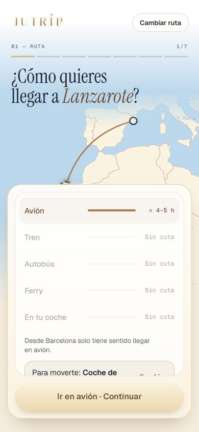
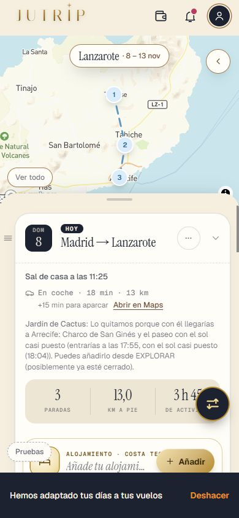
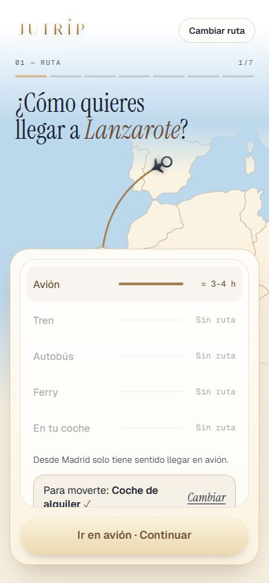

Repaso de la Tanda ARREGLO
El arreglo urgente de «no se puede crear un viaje a Lanzarote» (el administrador no pasaba el guardián porque las llamadas del formulario no llevaban su sesión). Lanzarote sigue OCULTO para quien no es administrador. Marca cada punto cuando lo hayas comprobado.
0 · Qué pasaba ✅ Hecho — Al crear un viaje a Lanzarote (Barcelona → Lanzarote) salía «No hemos podido saber qué tipo de destino es Lanzarote ahora mismo. Reintentar» y no se podía seguirCAUSA REAL (distinta de la que se sospechaba): no fue Claude. Con Lanzarote oculto, el guardián de la API solo deja pasar al administrador si la petición trae su sesión, y las llamadas del formulario (clasificar el destino, la viabilidad del transporte, las experiencias, la ruta…) NO la llevaban (casi todas las llamadas a /api de la app van sin ella). El administrador era un desconocido: el servidor contestaba 404 «Not found» (comprobado: sin sesión, classify-destination de Lanzarote da 404 y el de Roma 200) y la app lo contaba como «no se pudo clasificar». En las pruebas nunca salió porque la API se arrancaba con Lanzarote visible para todos. Además, aunque hubiera llegado a Claude, un destino curado no debía depender de lo que diga. Dónde: No es de móvil. 1 · La clasificación de Lanzarote ✅ Hecho — `destination_config.classification` en lanzarote.json, como la de RomaVALORES PUESTOS: archetype `base_y_excursiones`, is_region `true` (una isla), requiere_coche `false`, pase_dominante `null`, vehiculo_altamente_recomendado `true`. POR QUÉ: `base_y_excursiones` es el tipo con una base y excursiones en coche (Lanzarote: te quedas en una zona y sales a los sitios); `roadtrip_exclusivo` no (el coche no ES la experiencia y el alojamiento no cambia cada noche) y `urbano_clasico` tampoco. Con `base_y_excursiones` el avión desde la Península cuadra (`transportRows.ts` solo le quita el autobús) y `vehiculo_altamente_recomendado: true` hace que en RESERVAS el coche salga en ámbar (`readiness.ts`). `requiere_coche` solo cuenta en `urbano_clasico`; `pase_dominante` solo en `multidestino_tren_o_vuelo`. Dónde: No es de móvil. ✅ Hecho — El formulario da por hecho el coche, sin preguntar nada (decisión de Eric del 4-nov), y desde la Península, aviónPara `base_y_excursiones` el formulario preguntaba «¿Te gustaría alquilar un vehículo?» y luego «Base fija / Ruta itinerante»: en un destino en coche (Lanzarote) ahora se resuelve solo (coche de alquiler, base fija) y sale la tarjeta «Coche de alquiler». Otro destino de este tipo (Tenerife…) sigue preguntando. En RESERVAS, el bloque «Coche de alquiler | Mi coche». Dónde: Crear un viaje › Lanzarote › paso del transporte. 
2 · Un destino curado nunca depende de Claude ✅ Hecho — Si a un destino curado le faltara `classification`: valor por defecto y un aviso en el log; nunca la llamada a Claude ni el «Reintentar»; y la prueba de que todos los curados la tienenPor defecto: en coche → base_y_excursiones con coche muy recomendado; el resto → urbano_clasico. Aviso en el log del servidor: «[classify-destination] AVISO: el destino curado … no tiene destination_config.classification». La prueba nueva comprueba que Roma y Lanzarote (todos los curados) la llevan. Dónde: No es de móvil. ✅ Hecho — EL ARREGLO DE FONDO: toda llamada a /api lleva la sesión del viajeroNuevo `src/lib/fetchConCuenta.ts`, instalado en `main.tsx`: toda llamada a una dirección /api de este mismo sitio lleva `Authorization: Bearer <sesión>` si hay sesión y la llamada no trae ya el suyo; nada cambia sin sesión ni para otras direcciones (Mapbox, fotos…). Así el administrador pasa el guardián en TODAS las llamadas del formulario, no solo en la que falló. Es un cambio global: lo pasan las pruebas de toda la app. Dónde: No es de móvil. 3 · Por qué falló la llamada a Claude ✅ Hecho — Qué pasó con ClaudeNo falló. Hoy la llamada a Claude para clasificar Lanzarote contesta bien (tardó 2 segundos y costó 0,0056 $: la clave y el saldo están en orden). El «502» de la descripción no era de Claude: el error del formulario sale de CUALQUIER respuesta que no sea buena, y la que recibía era el 404 del guardián. No afecta a otras partes de la app por Claude (destinos no curados, experiencias…); lo que sí afectaba a todo era lo de la sesión, ya arreglado. No se ha pegado ninguna clave. Dónde: No es de móvil. 4 · La prueba ⚠️ A medias — Crear de verdad hasta ver la ruta: Barcelona → Lanzarote, Madrid → Lanzarote y el viaje de Eric (ACE, domingo 8-nov 08:25 → viernes 13-nov 19:40, Costa Teguise, coche de alquiler, con pase)El formulario real (Barcelona y Madrid) se recorre hasta el paso del transporte: sale «¿Cómo quieres llegar a Lanzarote?», avión, coche de alquiler y base fija, sin pregunta y sin «Reintentar». El viaje de Eric se crea de verdad con el generador del formulario (6 días, el domingo con la llegada a las 11:25 y el viernes de vuelta). NO he recorrido a mano los pasos de después del transporte (fechas, compañía, experiencias…) con clics: eso no cambia con este arreglo, pero fíjate tú en tu móvil. Y el caso exacto de producción (tu cuenta de administrador real contra la API con Lanzarote oculto) NO se puede reproducir aquí sin tu cuenta: lo comprueban el guardián (ya probado), el arreglo de la sesión (prueba con una sesión de mentira) y la API real (404 sin sesión). Mira tú que ya entra. Dónde: Crear un viaje › Barcelona › Lanzarote (con tu cuenta de administrador). 
✅ Hecho — Sin administrador, Lanzarote sigue oculto; Roma, igual (muestra de 60 idéntica); pruebaJutrip y las de Lanzarote en 0Sin sesión: Lanzarote da 404 en /api/classify-destination y no sale en la lista de destinos; Roma, 200. Ver el informe. Dónde: No es de móvil. Todas las capturas
arreglo_lz_ruta_creada_1 arreglo_lz_transporte_barcelona_1 
arreglo_lz_transporte_madrid_1